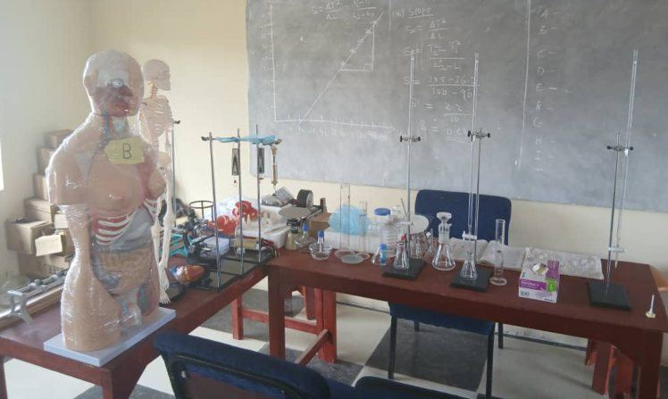
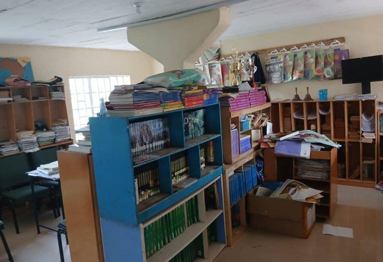
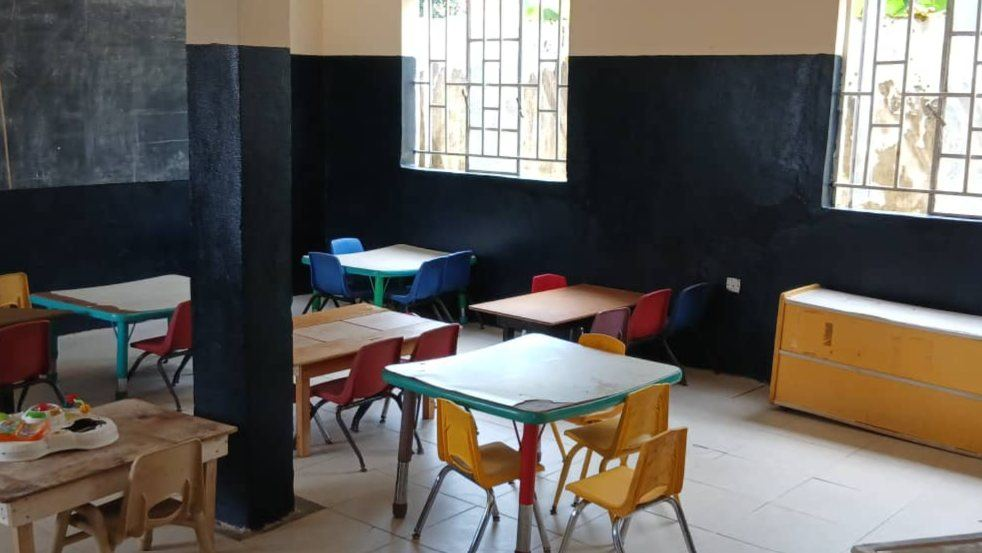
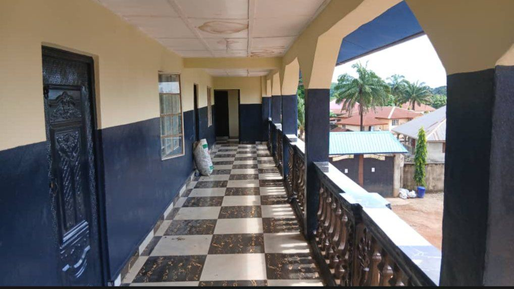

Student and Campus Life
From Day-care to Senior Secondary School, GIA gives every learner a safe campus, well-kept classrooms and laboratories, and a caring team.
A school community in Makama, Makeni
Gbonkolenken International Academy is a school for children and young people, from their first years in Day-care to S.S.S 3. Every learner belongs to a class with a Form-master, is looked after by a coordinator for their stage, and is taught by subject teachers led by Heads of Department.
Our students learn in classrooms, science laboratories, a library and a computer room, all on one campus in New Jersey, Makama.
“Seat of Wisdom”
A place for every age
Students move through five stages, each with its own coordinator.
Where learning happens
Rooms and resources that support teaching from the early years to Senior Secondary.
Hands-on science
Students handle real equipment: microscopes for Biology, anatomy models and a skeleton, glassware and stands for Chemistry, and a store of laboratory reagents. Practical work supports the Science department.

Books and computers
The library holds textbooks and reading material for students and teachers. The computer room gives learners hands-on time with desktop computers.

A gentle start
Kindergarten classrooms have child-sized furniture and bright learning boards. The Day-care room provides cots and a calm space for our youngest children.

Open verandas and bright corridors
Classes meet in a three-storey building with open verandas and wide corridors, which keep classrooms airy and easy to supervise.

People who look after every student
GIA's structure makes sure each student has someone to turn to.
School Prefects
Student leaders who help keep order and set an example for their classmates.
Form-masters
Each class has a Form-master who knows the students and follows their progress.
Level Coordinators
Day-care, Kindergarten, Grade, Junior Secondary and Senior Secondary coordinators oversee each stage.
Heads of Department
H.O.D Science, H.O.D Art and H.O.D Commercial guide subject teaching.
Three terms every year
First Term
A fresh start to the school year.
Second Term
Learning continues through the year.
Third Term
Completing the year's work.
GIA in pictures
Select any photograph to enlarge it.
Join the GIA family
Admission is open while the notice on our Academic Programmes page says so. Apply online or contact the school office.